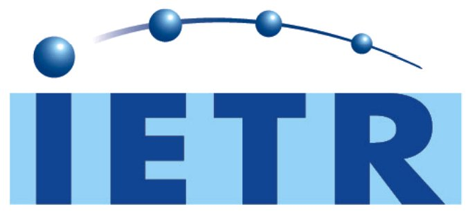
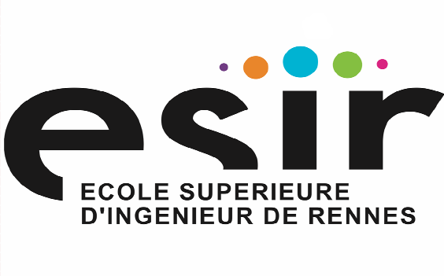
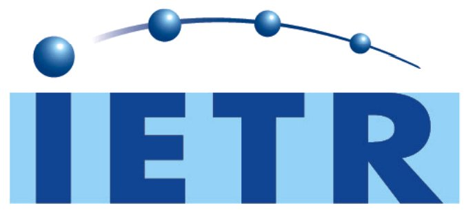
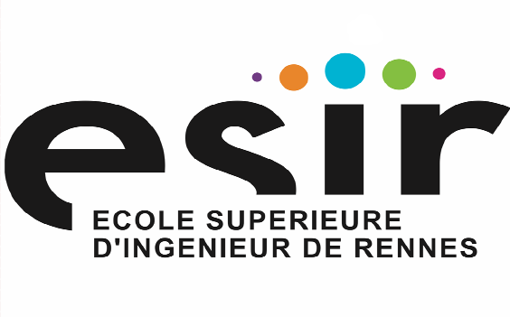
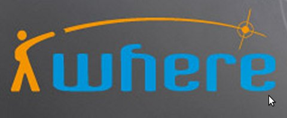
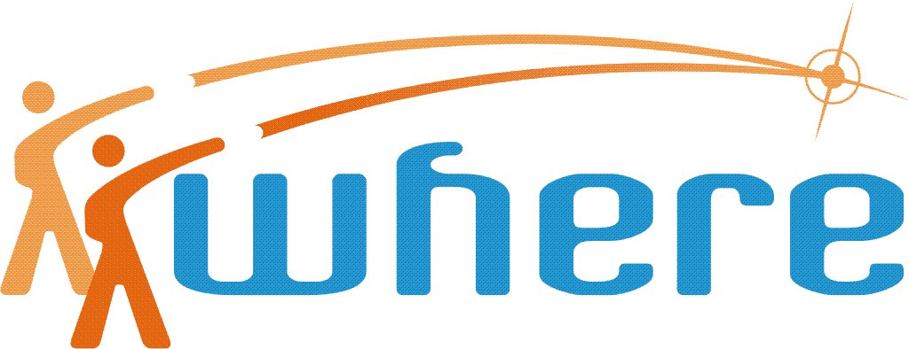
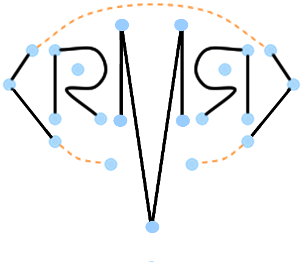
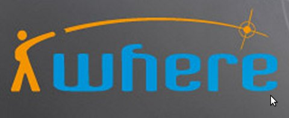
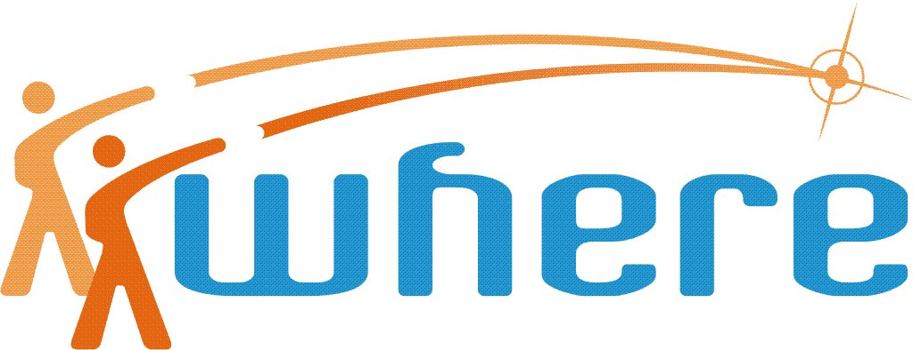
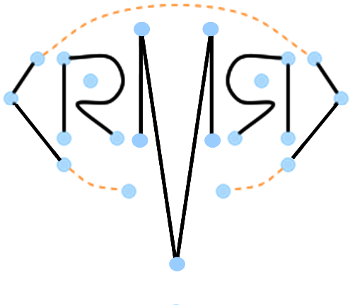

Pylayers is written in Python and is standing on the shoulders of the following giant Python packages:
Pylayers relies also on the interactive 3D viewing program geomview tool for fast and simple interaction with 3D entities.
Pylayers is driven by professor Bernard Uguen at University of Rennes 1, IETR laboratory and ESIR school of engineering
Pylayers is currently developed at IETR by Bernard Uguen , Nicolas Amiot, Mohamed Laaraiedh and Meriem Mhedbhi, with the technical support of all the members from the Research Team of the Propagation and Localization team of the IETR (UMR CNRS 6164) lab.
Among early pylayers contributors : Friedman Tchoffo Talom, Louis Marie Aubert, Roxana Burghelea, Yu Lei, Taguhi Chaluyman, Stéphane Avrillon and Eric Plouhinec (Saint-Cyr CREC research center).
The current version is tagged 0.1.
Download the last release in your preferred format on github.
$ git clone https://github.com/pylayers/pylayers.git
We warmly encourage all new user to contribute new suggestions, algorithms, models and other improvements back to the project
**Just fork it !** on your github account and get in touch on the mailing list if you have some interest or see practical applications.
This work has been supported by the Bretagne Region council (Project LOCUS), by the french ANR project AUBADE and CORMORAN and by the European projects FP7 UCELLS, FP7 WHERE1, FP7 WHERE2.
 



 







Copyright ©, 2013 University of Rennes 1
Pylayers is free software: you can redistribute it and/or modify it under the terms of the GNU General Public License as published by the Free Software Foundation, either version 3 of the License, or (at your option) any later version.
Pylayers is distributed in the hope that it will be useful, but WITHOUT ANY WARRANTY; without even the implied warranty of MERCHANTABILITY or FITNESS FOR A PARTICULAR PURPOSE.

{kind=link}